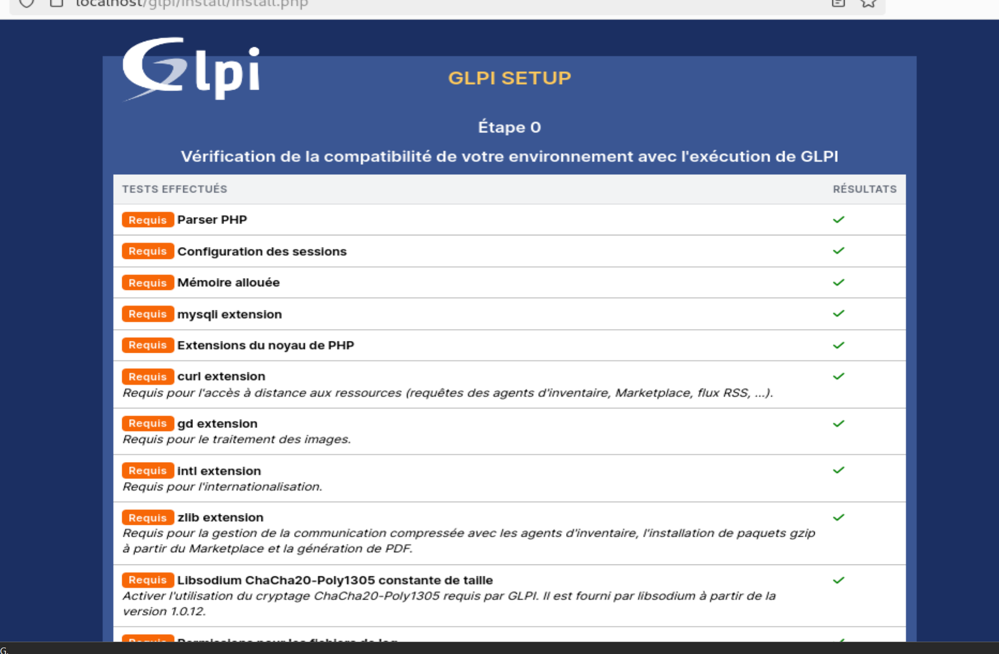
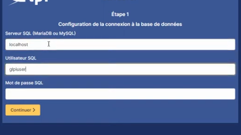
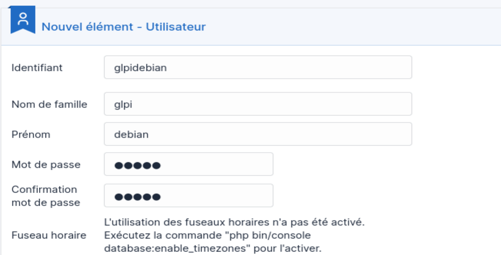

Présentation
GLPI (Gestionnaire Libre de Parc Informatique) est une solution open source pour la gestion du parc et du helpdesk. Il s'installe sur un serveur Linux avec une stack LAMP (Linux, Apache, MySQL, PHP). J'ai aussi une instance GLPI déployée dans mon infra sur la VM Titan (192.168.10.6).
Installation via l'interface web
Une fois Apache et PHP installés et l'archive GLPI déposée dans /var/www/html/, on accède à l'installeur depuis le navigateur. Il vérifie les extensions PHP manquantes et guide à travers les étapes de configuration.

Configuration de la base de données
L'installeur demande les identifiants MySQL/MariaDB : serveur (localhost), utilisateur et mot de passe. On doit créer la base avant, soit en ligne de commande, soit avec phpMyAdmin.
mysql -u root -p CREATE DATABASE glpi CHARACTER SET utf8mb4; CREATE USER 'glpiuser'@'localhost' IDENTIFIED BY 'motdepasse'; GRANT ALL PRIVILEGES ON glpi.* TO 'glpiuser'@'localhost'; FLUSH PRIVILEGES;

Création du compte administrateur
Après la configuration de la base, l'installeur crée les tables et demande de créer un utilisateur administrateur. On définit l'identifiant, le prénom, le nom et le mot de passe. Ce compte sera l'admin principal de l'instance GLPI.


install/ dans le répertoire GLPI pour des raisons de sécurité. Laisser ce dossier accessible est une faille courante.